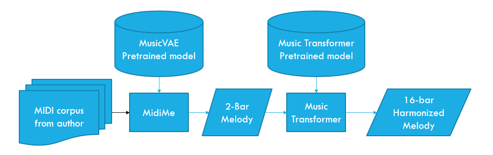

. The physical properties of sound expose the mathematical symmetries of matter and vibrations. Yet, music can feel organic and deeply tied to our inner emotional experience. Evidence suggests that specific ratios between frequencies are at least culturally recognized by human brains (Jacoby et al. 2019). These physical properties lay out multiple dimensions of expression accessible through combination making.
Prior to the invention of recordings, the transient nature of sound limited the exploration of the conceptual space of musical composition to those who had the ability to perform. The first musical instrument is considered to be a flute made of bone, dating back some 35,000 years ago (Conard et al. 2009). The instrument was capable of producing a set of tones to which humans presumably could sing or dance along. The earliest known system for musical notation dates back to the Greeks in the 5th century BC. This system allowed composers to notate rhythms and melodies, and eventually enabled others to perform works composed by someone else.
The invention of recording technology enabled us to explore this conceptual space even further by allowing us to capture and store sound indefinitely. Music has gone through many iterations since then, from jazz and blues in the early 20th century, through rock n’ roll, punk, hip-hop, EDM, etc…, all exploring different combinations of sounds in an attempt to create something new and unique. Recording technology also enabled us to mix multiple tracks together and add effects such as reverb or delay which add more complexity to the combination space. This innovation has removed the need to perform with the musical instrument in hand by providing a technological interface to sound, much like the plotter that inspired the generative art movement in the in the 1960s.
Similarly to other artistic domains, technological advancements seem to have shaped the evolution of sound and music allowing for a diversity of audiences to appreciate many forms of technologically mediated creativity. We could think of some examples of embodied technological mediation, such as:
(I — Bone Flute) → Musical Notes (Possibly random pitches)
(I — Violin) → Musical Notes (Any pitch in range)
(I — Piano) → Musical Notes (Well-tempered pitch system)
It is interesting to observe in these examples how each instrument possesses a distinct pitch range, timbre, and note interval system, yet maintains a degree of interoperability. This is because they ultimately share the final medium (air), which facilitates a common experience. In fact, while some musicians are appreciated for their solo performances, an ensemble of musicians arguably delivers a more intricate and rich experience, offering something extra to the audience.
There are also plenty of examples of alterity relations in the music domain:
I → Synthesizer (— Synthesized Sounds)
I → Sequencer (— Repeating Note Patterns)
I → Digital Audio Workstation (— Music Track)
These examples are based on a fundamentally different method of representing sound and music, which relies on technology. To better understand this idea, we may examine the two examples below:
(I — Classic Guitar) → Classic Guitar Sound
(I — Electric Guitar) → (Amplifier — Electric Guitar Sounds) / Analog Signal
Arguably, the transition from the first to the second example introduces a whole new expressive range that the musician can now control through the knobs and pedals of the amplifier, which processes the signal from the guitar. The signal coming from the electric guitar is not audible per se, but contains information about the vibrations to be reproduced. A musician must interact with the amplifier to produce sound; however, I would not consider this an alterity relation because the interaction still directly affects the output. For this reason, I would categorize the (Amplifier — Electric Guitar Sounds) as an hermeneutic relation. A human still needs to hold the guitar and play it, regardless of whether the instrument is a traditional acoustic one or an amplified one. On the other hand, when using a synthesizer, the output signal is produced indirectly from minimal human action. The triggering of notes in a synthesizer might even be controlled by other components, such as arpeggiators or sequencers, making the whole process better understood as a complex system rather than a direct linear flow. Digital systems are also ambivalent in this sense, as they can be fully transparent to the performer, except for perhaps a few milliseconds of latency introduced by the Analog-to-Digital and Digital-to-Analog Conversion. However, they can also be fully opaque, as is the case for an entirely digitally produced track that reuses sampled sounds.
So I believe it is important to expand the alterity examples above to include these foundational technologies as acting in the background of analog/digital tools, coupled with rule-based (R[]) interpretation of inputs:
I → Synthesizer / (Analog Signal — R[Controls]) (— Synthesized Sounds)
I → Sequencer / (MIDI — R[Notes]) (— Repeating Note Patterns)
I → Digital Audio Workstation / (Digital Signal — R[Samples]) (— Music Track)
As discussed in Chapter 3, GDL tools can be likened to these forms of alterity relations, bearing in mind that the D[] operator will appear somewhere. For example, MusicVAE from Magenta, a DL-based toolkit for music generation developed by Google (Roberts et al. 2018), can predict possible continuations of a sequence of notes. The mediation provided by this tool can be described as:
I → MusicVAE / (Model → D[InitialSequence]) (— Sequence continuation)
This study is set out to explore how the introduction of the D[] operator affects the creative process within the context of music composition.
The opportunity for this study emerged from a conversation with Vicky Fung, a Hong Kong composer who has written the melodies for over 40 Canto-pop hits performed by various artists over the last 20 years (see Figure 4.1). Her contribution to the local scene is well-recognized within the community, and her passion for the industry was palpable from our first meeting. Like most creative ideas, this project began with a simple conversation about how our expertise could complement each other to explore the new creative landscapes offered by emerging technologies. Her motivation was rooted in the desire to preserve and maintain the Canto-pop genre, as she had sensed a gradual decline in interest over recent years. The conversation also revealed her longing to relive the early days of her career when her composition style had nuances she felt she could no longer replicate. My proposition to her was to explore the possibility of training a machine learning model that could capture her style and its evolution throughout her career. In theory, this would enable a form of time-travel, as we could ask the model to generate musical scores according to different periods of her life. In hindsight, this was an extremely ambitious goal, given the technological constraints and my limited knowledge of the field at the time. However, it proved to be a motivating objective that set in motion a fruitful collaboration.
Our first meeting on May 27th, 2020, marked the beginning of this journey, which culminated over a year later with the presentation of our work, , at Artmachines 2. The conference was held at the School of Creative Media at CityU University of Hong Kong from June 10th to 14th, 2021. Due to the COVID-19 pandemic and other health-related issues, meetings were interrupted during the summer of 2020. However, we resumed our discussions online in October and November and met up again in December and January to finalize our proposal for Artmachines 2. Upon acceptance of our submission, our collaboration intensified in 2021 during the months of April and May, when most of the development and output evaluation took place. During this period, we met regularly every two weeks and also communicated via online messaging about our progress. Due to access restrictions at PolyU campus, meetings had to be planned two days in advance, which was not always possible.
Our collaboration can be divided into two phases, corresponding to two development iterations that experimented with different systems. Before we could train anything, our first task was to prepare a custom dataset with Vicky’s melodies. This preliminary step proved to be rather time-consuming, as our attempts to automate MIDI melody extraction from audio files did not yield acceptable results. We ultimately created the MIDI files by hand after several failed attempts. Once we had a clean set, our first attempt utilized two models provided in the Magenta toolkit (Roberts et al. 2018; Huang et al. 2018), namely MusicVAE and Music Transformer. The MusicVAE 2-bar model was fine-tuned with 40 of Vicky’s songs so that we could generate novel melodies in the same style. These 2-bar samples were then fed into Music Transformer for expansion and harmonization. The entire architecture can be visualized in Figure 4.2.

One significant limitation of this method was the restricted length of the VAE-generated melodies. This constraint was imposed by the VAE architecture in conjunction with the amount of GPU memory available to us at the time. MusicVAE is easy to train, but it is not very efficient at processing sequences. On the other hand, the transformer architecture, designed for language tasks, can be adapted for use with longer and more complex note sequences. After listening to several batches with Vicky, she was impressed by the quality of the generated samples but did not feel that the melodies produced reflected her style. She sensed a generic classical music feel characterizing the output, which was not representative of her work. Reflecting upon the causes of this behavior, it became clear that the influence of the training data used for Music Transformer was overshadowing the stylistic components extracted from the dataset we assembled. This realization prompted us to search for solutions that we could train entirely by ourselves, initiating our second development iteration.
As the transformer architecture gained popularity, several model implementations became available to the general public. We decided to try training our own model from scratch, testing out different code-bases. The most promising solution we identified at the time was X-transformers (a transformer implementation combining several techniques and optimizations documented at https://github.com/lucidrains/x-transformers1). However, during this iteration, we encountered another issue. Due to the limited number of songs in our dataset, the resulting output did not learn enough about general musical theory. For example, the generated output did not adhere to a single tonality, instead spanning all 12 notes rather freely. We surmised that this was a legitimate difficulty for the model since we provided only 40 melodies to work with. To mitigate this issue, we expanded the training set with an additional 200 melodies selected by Vicky. The choice of melodies to include was based on the artists and songs that were most influential in Vicky’s musical upbringing. The resulting melodies were marginally better, yet still not exactly what we hoped to achieve.
In terms of ACASIA modules, this collaboration might be described as follows:
Association, combination and abstraction as D[Corpus] prediction. In the first iteration, we trained our own MidiMe model (a VAE) to reproduce typical note patterns found in Vicky’s corpus. Similarly, in the second iteration we have trained a transformer to make predictions about the next note in a sequence. In both cases training the model performs an abstraction, which enables the production of new associations and combinations during inference. In post-phenomenological notation our iterations would map to:
MusicTransformer → Dpretrained[(MidiMe → Dvicky[Corpus])]
XTransformer → Dvicky[Corpus]
Selection. Vicky, as the artistic soul of the project, was responsible for guiding the selection. However, we did not have control over the input selection of the pre-trained model.
Integration and adaptation. These components were managed by humans, except for the integration between different steps of the pipeline, which was automated through a computer script (R1):
Vicky → (I → R1[D1, D2, ..., Dn]) − AudioFiles
For both of us, this exploration led to a deeper understanding of the potential benefits and limitations of using DL for music generation. Despite the difficulties we encountered and the limited quality of the output produced, our collaboration provided us with extremely valuable insights about the process of crafting our own Dvicky[]. These insights are summarized below.
Datasets are key. When working with DL, most of the attention and time end up being directed towards matters related to the data we feed the algorithms during training. For pre-trained models with the scale required for adequate generalization, we cannot control this (as a popular DL mantra recites, ). The size of the dataset is also a significant factor in determining the quality of the output. Because our task is bound to a small dataset, we encountered difficulties in training a good model from scratch, as there seems to be no obvious way to augment the dataset without introducing unwanted elements. Recent models for audio generation provide text-based conditioning, which might constitute a solution to this issue (I will touch upon this again in Chapter 6 and 7).
Artistic identity may not be about information. During our joint evaluation sessions, we discussed whether the generated output we were listening to could be considered aligned with her identity, as well as whether it could be deemed as original, since the output felt quite generic. Perhaps something is lost in the process of abstraction, which, for the sake of more efficient similarity, sacrifices details that matter for the selection process.
Evaluation of audio content is time-consuming. Compared to the visual or language domain, evaluating music and more in general audio content is a much longer process. This is a trivial but important aspect of working with generative music. We can look at a picture and have an almost immediate reaction to it, but evaluating one minute of audio content takes at least one minute by definition. This generates a heavy load on the selection stage, which cannot be avoided.
Music theory not included. When using R[], rules of music can be defined. When using D[] and the dataset is small, GDL may be able to capture some elements of the style, but incorporating musical theory and the geometrical symmetries of harmonic patterns in probabilistic models requires a much larger scale. A possible solution we did not explore is fine-tuning a pre-trained model.
Within the context of music, these observations emphasize the importance of rules and structure for efficient generation. Many of the issues we encountered working with DL are related to the inherent tonal structure of Western music, which is much more efficiently expressed through formal rules rather than inferred from data. The inherent symmetries of traditional 7-note scales used in the vast majority of pop songs could be easily described in terms of CT. In comparison, the Illiac Suite (see Section 2.2.3) created 55 years ago sounds much more pleasant than anything we could train from scratch using state-of-the-art transformers. While large-scale pre-trained models produce music consistent with music theory, their output tends to be merely typical and lacks novelty. Once again, DL, due to its inherent PT-inspired nature, reflects the limitations of the probabilistic approach by failing to capture the diversity within the large corpora they learn from.
In this study, we also confirmed the importance of compositionality in music. Despite the issues we encountered, the fact that transformers can generate long and complex musical sequences is testament to the architecture’s ability to capture some level of compositionality that exists in music. The effectiveness of self-attention and scale might hint at the need to expand existing TOCs in this direction. While musical theory can be expressed by formal rules, it is not obvious how we develop these intuitions. This relates back to (Rey 1993) (see Section [sec:the-problem-of-analytic-data]), pointing out that humans seem to have the capability to at least grasp analyticity.
In conclusion, this collaboration led both of us to grapple with central questions about what it means to experience the creative process through an alterity mediation. It also exposed us to some of the practical limitations of working with the tools available at the time. Most importantly, it highlighted the difficulties that DL has when working with smaller datasets that practitioners create themselves.
There can be no such thing as a naive, unconceived act of photographing. A photograph is an image of concepts.
The training script we used can be found in this repository: https://github.com/asigalov61/Music-Transformers-Library↩︎